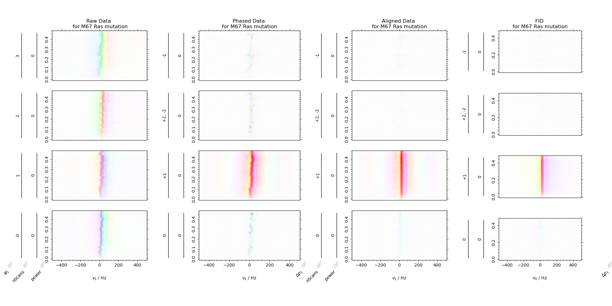
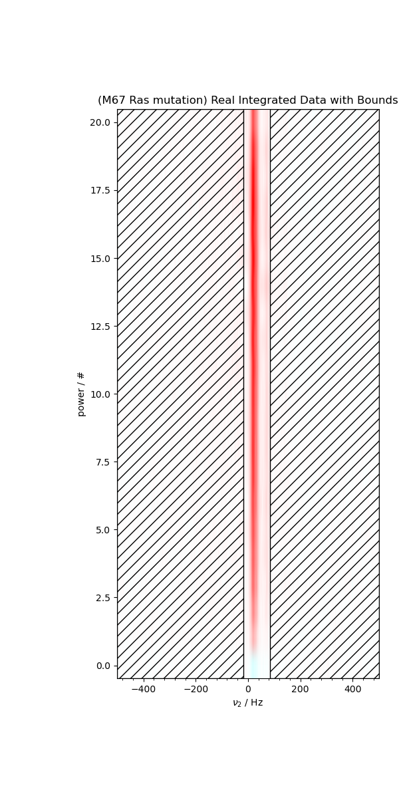
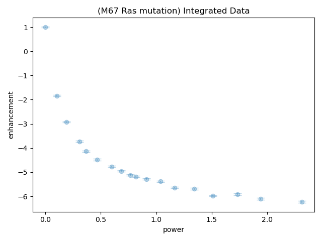

Note
Go to the end to download the full example code
Convert 2D Real Data into Integrals with Errors¶
Take a 2D dataset and convert it to a table of integrals with errors, utilizing all the bells and whistles (frequency and time selection, alignment, etc.)
Demonstrate on a fake dataset of an inversion recovery with multiple repeats (φ × t2 × vd × repeats) w/ normally distributed random noise, and with fluctuating field (normally distributed field variation).
- 
- 
- 
C:\Users\jmfranck\pyspecdata.0.log appears to be locked or otherwise inaccessible: I'm going to explore other options for fileno
---------- logging output to C:\Users\jmfranck\pyspecdata.1.log ----------
--> load_data.py(453):root proc_spincore_ODNP_v1 2023-05-13 16:25:39,453
INFO: loading pre-processing for ODNP
--> load_data.py(455):root proc_spincore_ODNP_v1 2023-05-13 16:25:39,453
INFO: programmed powers [0. 0.17782794 0.35481339 0.56234133 0.70794578 0.89125094
1.12201845 1.25892541 1.41253754 1.58489319 1.77827941 1.99526231
2.23872114 2.51188643 2.81838293 3.16227766 3.54813389 3.98107171
3.16227766 1.99526231 0.89125094]
--> load_data.py(457):root proc_spincore_ODNP_v1 2023-05-13 16:25:39,454
INFO: meter powers [0.0776, 2.8103, 4.8812, 5.62, 6.6702, 7.7522, 8.354, 8.8325, 9.1063, 9.5967, 10.173, 10.664, 11.285, 11.787, 12.383, 12.884, 13.64, 12.437, 10.243, 6.7685]
--> load_data.py(458):root proc_spincore_ODNP_v1 2023-05-13 16:25:39,455
INFO: actual powers [ 0 1 2 3 4 5 6 7 8 9 10 11 12 13 14 15 16 17 18 19 20]
c:\users\jmfranck\git_repos\proc_scripts\pyspecProcScripts\load_data.py:460: RuntimeWarning: invalid value encountered in divide
strm("ratio of actual to programmed power", s.getaxis("power") / prog_power)
--> load_data.py(459):root proc_spincore_ODNP_v1 2023-05-13 16:25:39,456
INFO: ratio of actual to programmed power [ nan 5.62341325 5.63676586 5.33483823 5.65015018 5.61009227
5.34750563 5.56029764 5.66356628 5.6786161 5.62341325 5.51305957
5.36020311 5.17539322 4.96738745 4.74341649 4.50941269 4.27020693
5.69209979 9.52255744 22.44036909]
--> generate_integrals.py(92):pyspecdata.core generate_integrals 2023-05-13 16:25:40,389
INFO: best shift is 0.0033173406336152104
c:\users\jmfranck\git_repos\pyspecdata\pyspecdata\core.py:1804: UserWarning: marker is redundantly defined by the 'marker' keyword argument and the fmt string "o" (-> marker='o'). The keyword argument will take precedence.
return ax.errorbar(*tebargs[:-1],**tebkwargs)
c:\users\jmfranck\git_repos\pyspecdata\pyspecdata\figlist.py:492: UserWarning: This figure includes Axes that are not compatible with tight_layout, so results might be incorrect.
plt.gcf().tight_layout()
from pylab import *
from pyspecdata import *
from pyspecProcScripts import *
import sympy as s
init_logging(level="debug")
rcParams["image.aspect"] = "auto" # needed for sphinx gallery
# sphinx_gallery_thumbnail_number = 3
fl = fl_mod()
signal_pathway = {"ph1": 1}
t_max = 0.1
with figlist_var() as fl:
for (
filename,
exp_type,
nodename,
postproc,
indirect,
clock_correction,
label,
f_range,
) in [
(
"211223_Ras_M67R1a_capProbe",
"ODNP_NMR_comp/ODNP",
"enhancement",
"spincore_ODNP_v1",
"power",
False,
"M67 Ras mutation",
(-0.5e3, 0.5e3),
)
]:
fl.basename = "(%s)" % label
s = find_file(
filename,
exp_type=exp_type,
expno=nodename,
postproc=postproc,
lookup=lookup_table,
)
s_int, s = generate_integrals(
s,
signal_pathway=signal_pathway,
searchstr=label,
f_range=f_range,
indirect=indirect,
alias_slop=2,
clock_correction=clock_correction,
fl=fl,
)
Total running time of the script: ( 0 minutes 9.226 seconds)